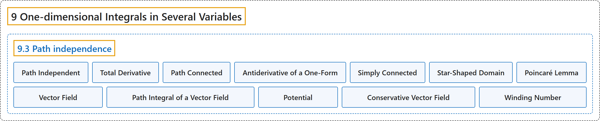

9.3 Path independence
Classification

Glossary
| Term | Definition | 中文翻译 | Source |
|---|---|---|---|
| 9.3 Path independence 路径无关性 |
(No definition) | （无定义） | Lebl, 2026, section 9.3 |
| Path Independent 路径无关 |
"Let \(U \subset \mathbb{R}^n\) be an open set and \(\omega\) a one-form defined on \(U\). The integral of \(\omega\) is said to be path independent if for every pair of points \(x,y \in U\) and every pair of piecewise smooth paths \(\gamma \colon [a,b] \to U\) and \(\beta \colon [c,d] \to U\) such that \(\gamma(a) = \beta(c) = x\) and \(\gamma(b) = \beta(d) = y\), we have \(\int_\gamma \omega = \int_\beta \omega\)." | 设 \(U \subset \mathbb{R}^n\) 是开集，\(\omega\) 是定义在 \(U\) 上的一形式。若对每对点 \(x,y \in U\) 以及每对满足 \(\gamma(a) = \beta(c) = x\)、\(\gamma(b) = \beta(d) = y\) 的分段光滑路径 \(\gamma \colon [a,b] \to U\) 与 \(\beta \colon [c,d] \to U\)，都有 \(\int_\gamma \omega = \int_\beta \omega\)，则称 \(\omega\) 的积分与路径无关。 | Lebl, 2026, section 9.3 |
| Total Derivative 全微分 |
"Let \(U \subset \mathbb{R}^n\) be an open set and \(f \colon U \to \mathbb{R}\) a continuously differentiable function. The one-form \(df := \frac{\partial f}{\partial x_1} \, dx_1 + \frac{\partial f}{\partial x_2} \, dx_2 + \cdots + \frac{\partial f}{\partial x_n} \, dx_n\) is called the total derivative of \(f\)." | 设 \(U \subset \mathbb{R}^n\) 是开集，\(f \colon U \to \mathbb{R}\) 连续可微。一形式 \(df := \frac{\partial f}{\partial x_1} \, dx_1 + \frac{\partial f}{\partial x_2} \, dx_2 + \cdots + \frac{\partial f}{\partial x_n} \, dx_n\) 称为 \(f\) 的全微分。 | Lebl, 2026, Definition 9.3.2 |
| Path Connected 道路连通 |
"An open set \(U \subset \mathbb{R}^n\) is said to be path connected if for every two points \(x\) and \(y\) in \(U\), there exists a piecewise smooth path starting at \(x\) and ending at \(y\)." | 若对 \(U\) 中任意两点 \(x\) 与 \(y\)，都存在从 \(x\) 出发、到 \(y\) 结束的分段光滑路径，则称开集 \(U \subset \mathbb{R}^n\) 道路连通。 | Lebl, 2026, Definition 9.3.2 |
| Antiderivative of a One-Form 一形式的原函数 |
"There is an easier local criterion, a differential equation, that guarantees path independence, or in other words it guarantees an antiderivative \(f\) whose total derivative is the given one-form \(\omega\)." | 有一个更简单的局部判别准则——一个微分方程——它保证路径无关，换言之，它保证存在一个原函数，即全微分恰为给定一形式 \(\omega\) 的 \(f\)。 | Lebl, 2026, section 9.3 |
| Simply Connected 单连通 |
"We can find the antiderivative in every simply connected domain, which informally is a connected open set where every path between two points can be “continuously deformed” into any other path between those two points." | 在每个单连通区域上都能找到原函数；单连通区域非正式地说就是这样的连通开集：两点之间的每条路径都能“连续形变”为这两点之间的任何其他路径。 | Lebl, 2026, section 9.3 |
| Star-Shaped Domain 星形域 |
"Let \(U \subset \mathbb{R}^n\) be an open set and \(p \in U\). We say \(U\) is a star-shaped domain with respect to \(p\) if for every other point \(x \in U\), the line segment \([p,x]\) is in \(U\), that is, if \((1-t)p + tx \in U\) for all \(t \in [0,1]\)." | 设 \(U \subset \mathbb{R}^n\) 是开集，\(p \in U\)。若对 \(U\) 中任何其他点 \(x\)，线段 \([p,x]\) 都在 \(U\) 中，即对所有 \(t \in [0,1]\) 有 \((1-t)p + tx \in U\)，则称 \(U\) 是关于 \(p\) 的星形域。 | Lebl, 2026, Definition 9.3.5 |
| Poincaré Lemma 庞加莱引理 |
"Let \(U \subset \mathbb{R}^n\) be a star-shaped domain and \(\omega\) a continuously differentiable one-form defined on \(U\). Suppose that for every \(j\) and \(k\), \(\frac{\partial \omega_j}{\partial x_k} = \frac{\partial \omega_k}{\partial x_j}\). Then there exists a twice continuously differentiable function \(f \colon U \to \mathbb{R}\) such that \(df = \omega\)." | 设 \(U \subset \mathbb{R}^n\) 是星形域，\(\omega\) 是定义在 \(U\) 上的连续可微一形式。若对每个 \(j\) 和 \(k\) 有 \(\frac{\partial \omega_j}{\partial x_k} = \frac{\partial \omega_k}{\partial x_j}\)，则存在二次连续可微函数 \(f \colon U \to \mathbb{R}\) 使得 \(df = \omega\)。 | Lebl, 2026, Theorem 9.3.6 |
| Vector Field 向量场 |
"Let \(U \subset \mathbb{R}^n\) be a set. A continuous function \(v \colon U \to \mathbb{R}^n\) is called a vector field." | 设 \(U \subset \mathbb{R}^n\) 是集合。连续函数 \(v \colon U \to \mathbb{R}^n\) 称为向量场。 | Lebl, 2026, Definition 9.3.8 |
| Path Integral of a Vector Field 向量场的路径积分 |
"Given a smooth path \(\gamma \colon [a,b] \to \mathbb{R}^n\) with \(\gamma\bigl([a,b]\bigr) \subset U\), we define the path integral of the vector field \(v\) as \(\int_{\gamma} v \cdot d\gamma := \int_a^b v\bigl(\gamma(t)\bigr) \cdot \gamma'(t) \, dt\), where the dot in the definition is the standard dot product." | 给定满足 \(\gamma\bigl([a,b]\bigr) \subset U\) 的光滑路径 \(\gamma \colon [a,b] \to \mathbb{R}^n\)，定义向量场 \(v\) 的路径积分为 \(\int_{\gamma} v \cdot d\gamma := \int_a^b v\bigl(\gamma(t)\bigr) \cdot \gamma'(t) \, dt\)，其中的点是标准点积。 | Lebl, 2026, Definition 9.3.8 |
| Potential 势函数 |
"For example, path independence for integration of vector fields is simply that \(\int_x^y v \cdot d\gamma\) is path independent if and only if \(v = \nabla f\), that is, \(v\) is the gradient of a function. The function \(f\) is then called a potential for \(v\)." | 例如，向量场积分的路径无关性就是：\(\int_x^y v \cdot d\gamma\) 与路径无关，当且仅当 \(v = \nabla f\)，即 \(v\) 是某个函数的梯度。这时函数 \(f\) 称为 \(v\) 的势函数。 | Lebl, 2026, section 9.3 |
| Conservative Vector Field 保守向量场 |
"A vector field \(v\) whose path integrals are path independent is called a conservative vector field." | 路径积分与路径无关的向量场 \(v\) 称为保守向量场。 | Lebl, 2026, section 9.3 |
| Winding Number 环绕数 |
"The number \(\ell\) is called the winding number it measures how many times \(\gamma\) winds around the origin in the counterclockwise direction." | 数 \(\ell\) 称为环绕数，它度量 \(\gamma\) 沿逆时针方向绕原点转了多少圈。 | Lebl, 2026, Exercise 9.3.10 |
References
Lebl, J. (2026). Basic analysis I & II: Introduction to real analysis (May 22, 2026 edition). Retrieved October 29, 2026, from https://www.jirka.org/ra/html/